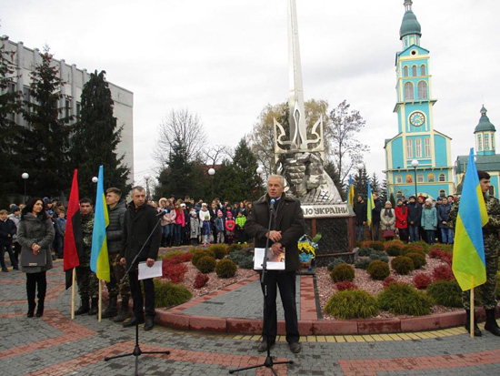
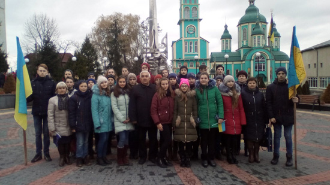
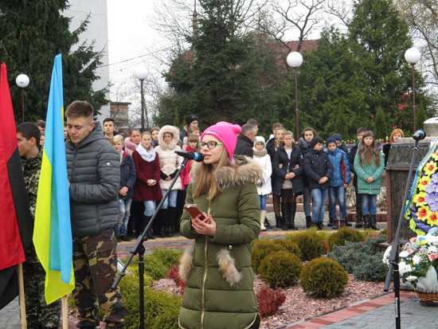
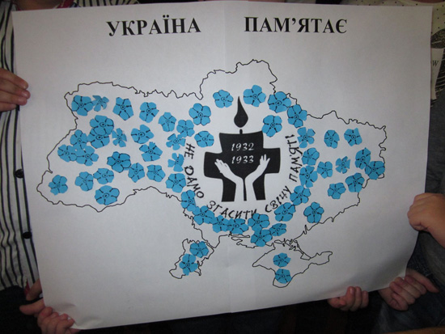

<!DOCTYPE html>
<html lang="en">
<head>
  <meta charset="UTF-8">
  <meta name="viewport" content="width=device-width, initial-scale=1.0">
  <link rel="stylesheet" href="https://maxcdn.bootstrapcdn.com/bootstrap/4.0.0-beta/css/bootstrap.min.css" integrity="sha384-/Y6pD6FV/Vv2HJnA6t+vslU6fwYXjCFtcEpHbNJ0lyAFsXTsjBbfaDjzALeQsN6M" crossorigin="anonymous">
  <script src="https://code.jquery.com/jquery-3.2.1.slim.min.js" integrity="sha384-KJ3o2DKtIkvYIK3UENzmM7KCkRr/rE9/Qpg6aAZGJwFDMVNA/GpGFF93hXpG5KkN" crossorigin="anonymous"></script>
  <script src="https://cdnjs.cloudflare.com/ajax/libs/popper.js/1.11.0/umd/popper.min.js" integrity="sha384-b/U6ypiBEHpOf/4+1nzFpr53nxSS+GLCkfwBdFNTxtclqqenISfwAzpKaMNFNmj4" crossorigin="anonymous"></script>
  <script src="https://maxcdn.bootstrapcdn.com/bootstrap/4.0.0-beta/js/bootstrap.min.js" integrity="sha384-h0AbiXch4ZDo7tp9hKZ4TsHbi047NrKGLO3SEJAg45jXxnGIfYzk4Si90RDIqNm1" crossorigin="anonymous"></script>
  <meta http-equiv="X-UA-Compatible" content="ie=edge">
  <link href="https://fonts.googleapis.com/css?family=Inconsolata" rel="stylesheet">
  <meta http-equiv="X-UA-Compatible" content="ie=edge">    <title>Культурно-освітнє життя Мостиської об'єднаної територіальної громади</title>
  <link rel="stylesheet" href="https://maxcdn.bootstrapcdn.com/bootstrap/4.0.0-beta/css/bootstrap.min.css" integrity="sha384-/Y6pD6FV/Vv2HJnA6t+vslU6fwYXjCFtcEpHbNJ0lyAFsXTsjBbfaDjzALeQsN6M" crossorigin="anonymous">
  <link rel="stylesheet" href="https://cdnjs.cloudflare.com/ajax/libs/animate.css/3.5.2/animate.min.css">
  <link rel="stylesheet" href="css/index.css">
  <link rel="stylesheet" href="podiji/podiji.css">
  <link rel="stylesheet" href="js/form.js">
  <link href="https://fonts.googleapis.com/css?family=Stint+Ultra+Condensed" rel="stylesheet">
  </head>

<body>

    <aside class="twin">
        <h2>Поетичне реквіє - памяті «Мамо, не плач, я повернусь весною…»</h2>
        <p>21 листопада учні 8 - 9 класів та педагогічний колектив Пнікутського НВК Мостиської ОТГ (керівник закладу Гоян І.Д.) взяли участь у поетичному реквіємі - памяті «Мамо, не плач, я повернусь весною…», який відбувся у м.Мостиськах на алеї Героїв Небесної сотні. 
Учениця 8 класу Писко Олена прочитала поезію, присвячену Героям майдану та усім Героям України.
Ми, українці, - свідомий і відповідальний народ, здатний відстоювати свій вибір. Ми подали історичний приклад того, як солідарність, братерство і взаємоповага між сотнями тисяч людей згуртовує їх довкола спільної мети. 
Український народ відчув потребу в єднанні, повірив у своє майбутнє і довів, що у нації, яка вийшла на Майдан і заявила, шо спроможна на захист своєї свободи, є велике серце і високий дух.
Без усякого сумніву, про захисників нашої держави писатимуть книги, зніматимуть кінофільми, на прикладах беззавітного служіння рідній Батьківщині виховуватиметься не одне покоління українців. 
Бо вони – справжні герої, які у нерівному двобої протиставили свій патріотизм, відповідальність, безмежну любов до країни. І саме за це їм наша людська вдячність і низький уклін
</p> 
<span></span>
<span></span>
<span></span>
    </aside>
    <aside class="twin">
        <h2>ШАНОВНІ СПІВВІТЧИЗНИКИ !</h2>
        <p>
Запрошуємо Вас прийняти участь у вечорі скорботи , присвяченому вшануванню пам’яті жертв Голодомору 
«ЧОРНА СПОВІДЬ МОЄЇ ВІТЧИЗНИ»
Вечір скорботи відбудеться 
у сквері Т. Г. Шевченка 
24 листопада о 16:00 год.</p> 
<p>Відділ освіти, культури і туризму ,
молоді та спорту Мостиської міської ради</p>
<span></span>

    </aside>

    <footer class="colophon grid">
        <aside>Content, layout, design: <a href="https://www.linkedin.com/in/petro-iashchyshyn/" target="_blank" rel="nofollow"> by master85</a>.</aside>
    </footer>

</div>

</body>

</html>
